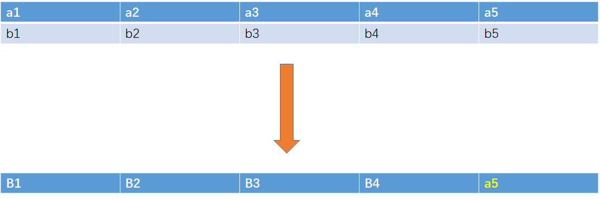
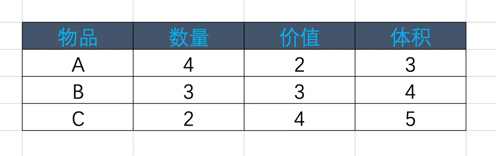

动态规划之背包问题
尽可能详细的讲清楚背包问题，以及我所踩过的坑。
背包问题看本文就够了，一共6题。
首先我们先来看一道零钱凑整问题：
入门样例
•给定面值分别为1,4,16,64的硬币，每种硬币有无限个，给定一个N，求组成N最少需要的硬币的数量，若无法组成则返回-1.
注意，这题中的硬币都是2的n次方，（前一个数是后一个数的两倍或以上）因此可以使用贪心算法。
贪心算法和动态规划的关系就是可以用贪心算法做的题一定可以用动态规划做出来，但是能用动态规划做出来的题不一定能用贪心算法做出来。
这里上一张贪心和动态规划的图：
1 | public int coins(int N){ |
反例：假设给的硬币面值为1，9，10。要求去凑18元。
贪心的解应该是取1个10和8个1答案是9，但是正确答案其实是取2个9。
先将零钱凑整问题放一放，来看下面一道题
01背包问题
给定n件物品，第i件物品的价值为v[i]，体积为w[i]，现在我们拥有一个容量为V的背包。
求能获得的最大价值，不一定装满。
在回答问题之前，先解释一下什么是01背包问题：即对于每件物品来说我们要么拿要么不拿，每件物品要么拿1件要么拿0件。
了解完定义之后我们开始解这道题：
还是老方法解动态规划问题三部曲：
下定义
首先求什么我们定义什么。我们定义dp[i][j]为轮到第i件物品且背包还剩下j单位空间时所得到的最大价值。
写递推式
我们知道，在轮到第i件物品的时候我们可以选择拿或者不拿，那么此时的价值dp[i][j]就要么是拿了第i件物品，或者不拿第i件物品时的最大价值即：
$$
dp[i][j]=Max(dp[i-1][j],dp[i-1][j-w[i]]+v[i])
$$
考虑初始条件
本题不需要考虑特殊初始条件
技巧：有时候DP需要初始化第一行或者第一列，因为有时候数组下标可能越界，技巧就是多申请一行或者一列空间，并初始化为0，这样可以依靠这第0行来初始化第一行的值。例如第一行值依靠递推式取决于上一行的值。
以背包容量为10，物品大小和价值分别是A{3,4}，B{4,5}，C{5,6}。模拟走一遍流程：
其实我们可以从递推式看出，当商品i为0的时候递推式变成了
dp[0][j]=Max(dp[-1][j],dp[-1][j-w[0]]+v[0])，因此我们新建了一行0来保证数组不越界，但是此时第i件物品还是从0开始到n-1，而dp的i已经变成1到n了。
因此递推式会有一点小小变化：
当j>=w[i]时
$$
dp[i][j]=Max(dp[i-1][j],dp[i-1][j-w[i-1]]+v[i-1])
$$
else
$$
dp[i][j]=dp[i-1][j]
$$
即dp[1]对应物品w[0]和v[0]，一开始看会有点别扭，做多了就习惯了。
所以给出解：
1 | public static int knapsack(int[] v,int[] w,int V){ |
我们看到，dp[i][]只是依赖到了dp[i-1][]，所以依然可以去优化。
因为是二维的dp，我们就可以根据递推式得到dp[i][j]总是依赖于上一行的dp[i-1][j]以及dp[i-1][j-w[i]]，而之前说过滚动数组，因此我们可以使用一维dp来代替二维dp。
当j>=w[i]时
$$
dp[j]=Math.max(dp[j],dp[j-w[i]]+v[i]);
$$
else
$$
dp[j]=dp[j]
$$
并且由于新建的数字默认填充0，因此我们都不需要新开一行数据，或者换句话说不需要初始化数组。
但是值得注意的是当我们计算dp[j]的时候要依赖于上一行的dp[j]（在这里没毛病，因为计算dp[j]的时候在dp数组中j这个位置保存的还是上一行的值）和dp[j-w[i]]（这就有问题了，假设w[i]为1，那么dp[j]依赖于上一行的dp[j-1]，这在二维的dp里面是没毛病的，但一维dp中我们在计算dp[j]的时候其实已经将dp[j-1]也更新过了，不再是上一行的值，而是当前行的值，因此就会出问题）。

假设我们更新b5的值，b5=a5+b4。由于此时b5==a5，因此可以通过b5=b5+b4来做到，去掉a这一行。
相对于是将二维转一维。
但是如果b5=a3+x，由于a3已经被覆盖成b3因此我们拿不到。所以需要反向遍历, 保证之前的值没有被覆盖过
解决方案是什么呢？其实就是我们遍历数组的时候使用倒序的方法，即先遍历dp[j]再遍历dp[j-1]，因为dp[j-1]不依赖于数组下标大于j-1的位置的值，因此可以做到。
下面给出逐步优化的过程：
1 | public static int knaps2(int[] v, int[] w, int V){ |
但是我们注意到i是从1开始的，但是递推式里面并没有i的值，因此我们还可以写成：
1 | public static int knaps1(int[] v, int[] w, int V){ |
最终为：
1 | public static int knaps3(int[] v, int[] w, int V){ |
我们还需要注意一下初始化的问题：
至于初始化问题，不同的问法有不同初始化方法，如果不要求装满 的 话，价值为0就是背包的初始价值，如果要求装满，那么除了dp[0]之外所有的一开始都是不符合要求的，我们置为负无穷，这点下面会讲。
完全背包问题
看懂了01背包问题后，我们可以回到那道零钱凑整问题了。
假设penny总共有，1，2，5三种面额钱数，需要凑齐11块
但是这道题和01背包不一样的地方在于硬币是可以反复取的，因此是完全背包问题。
下面再次解释一下为什么贪心算法不可取：
看到可以选择任意多件，你也许会想，那还不容易，选性价比最高的就好了。
于是开启贪婪模式，把每种物品的价格除以体积来算出它们各自的性价比，然后只选择性价比最 高的物品放入背包中。
嗯，听起来好像没什么毛病，但仍旧有一个问题，那就是同一种物品虽然可以选择任意多件，但 仍旧只能以件为单位，也就是说单个物品是无法拆分的，不能选择半件，只能多选一件或者少选 一件。这样就造成了一个问题，往往无法用性价比最高的物品来装满整个背包，比如背包空间为 10，性价比最高的物品占用空间为7，那么剩下的空间该如何填充呢？
你当然会想到用性价比第二高的物品填充，如果仍旧无法填满，那就依次用第三、第四性价比物 品来填充。
听起来似乎可行，但我只需要举一个反例便能证明这个策略行不通。
想要举反例很简单，比如只有两个物品：物品A：价值5，体积5，物品B：价值8：体积7，背包 容量为10，物品B的性价比显然要比物品A高，那么用贪心算法必然会选择放入一个物品B，此 时，剩余的空间已无法装下A或者B，所以得到的最高价值为8，而实际上，选择放入两个物品A 即可得到更高的价值10。所以这里贪心算法并不适用。
开始解题：
下定义
我们设dp[i][j]为凑到j元所需的硬币数量，回想一下背包问题，i是第i种硬币，j是容量。
因此在这里j就是容量（元）。
写递推式
if(j>=coins[i])
$$
dp[i][j]=Min(dp[i-1][j],dp[i][j-coins[i]]+1)
$$
else
$$
dp[i][j]=dp[i-1][j]
$$
要么用之前的方法去凑硬币，要么在现在的基础上继续凑（可以多选）初始化
全初始化成Integer.MAX_VALUE-1
二维解法：
1
2
3
4
5
6
7
8
9
10
11
12public int coinChange2(int[] coins, int amount) {
int dp[]= new int[amount+1];
for (int i = 1; i <=amount ; i++) {
dp[i]=0x7fff_fffe;
}
for(int i=1;i<=coins.length;i++){
for(int j=coins[i-1];j<=amount;j++){
dp[j]=Math.min(dp[j],dp[j-coins[i-1]]+1);
}
}
return dp[amount]==0x7fff_fffe?-1:dp[amount];
}
二维dp降维打击后：
1 | public int coinChange(int[] coins, int amount) { |
Q：为什么part1从coin开始呢？
A：因为我们知道当i<coin的时候没办法凑因此直接跳过了,又由于是一维dp，dp[i][j]初始值是dp[i-1][j]而不是0，因此不需要else条件了。
Q：为什么这次初始化成0x7ffffffe
A：原因分为三点，第一点是说如果和之前一样不初始化那么我们没办法判断到底能不能凑整，因此最终需要判断是否为0x7ffffffe。第二点是因为计算min的时候如果初始化为0永远都是0最小。第三点是说不初始化为最大值是因为dp[j]+1的时候可能会溢出。
Q：为什么是正向遍历的？
A：从递推式可以看出来，dp[i][j]依赖的是dp[i][j-coin]和上一行值无关，因此需要得到该行最新值才能计算。
01背包的递推式是：
dp[i][j] = Math.max(dp[i - 1][j], dp[i - 1][j - w[i - 1]] + v[i - 1]);
所有的dp[i]都是从dp[i-1]推出来的，也就是说i只能在i-1的基础上被选中一次
完全背包的递推式是：
而我们硬币凑整问题dp[i]依赖于dp[i]因此可以一直取
dp[i][j]=Math.min(dp[i][j-coins[i-1]]+1,dp[i-1][j]);
凑数问题
给定一个nums，和一个target，问能否使用nums中的数凑出target值（每个元素只能用一次）
示例：
输入：Nums= [1,2,5,5], target = 11
输出：true
上面分析了这么多了，每个元素只能用一次明显是01背包问题。再考虑一下初始化条件，dp[i][0]为true吧（无论用什么数字选0次都能凑出0）。
1 | public boolean coins(int[] nums,int target){ |
降维打击：
1 | public static boolean coins(int[] nums,int target){ |
Leetcode 518 Coin Change2
ou are given coins of different denominations and a total amount of money. Write a function to compute the number of combinations that make up that amount. You may assume that you have infinite number of each kind of coin.
Example 1:
1 | Input: amount = 5, coins = [1, 2, 5] |
一分析就是完全背包问题了。注意初始化问题，dp[i][0]是1意思就是说无论用面值多少的硬币凑0元的话都有一种方法。
1 | public int change(int amount, int[] coins) { |
降维打击
1 | public static int change(int amount, int[] coins) { |
多重背包问题
问题描述多加了一个每个物品有一个被取的上限，我们还是可以把该背包问题转化为我们的基础解法-01背包
如果他的重量*上限>背包容量，是不是相当于完全背包？
不是的话我们分解即可对吧？
只需要用2进制表示出所有的可能，然后按照01背包的解法就可以了对吧。
看一道例题就懂了：
问给定容量为20的背包能装下的最大价值。

straightforward：多重背包问题介于01背包和完全背包中，所以可以直接转换成01背包问题
1 | private int multi(int n, int m, int[] h, int[] k, int[] p) { |
二进制优化：
1 | public class MultiBag { |
494. Target Sum
You are given a list of non-negative integers, a1, a2, …, an, and a target, S. Now you have 2 symbols + and -. For each integer, you should choose one from + and - as its new symbol.
Find out how many ways to assign symbols to make sum of integers equal to target S.
Example 1:
1 | Input: nums is [1, 1, 1, 1, 1], S is 3. |
这种题其实换成正数集合和负数集合就行了。如上面的例子正数+负数=3 正数-负数=5，我们就可以求出需要凑的正数的值是多少，从而可以凑出来。
1 | public static int findTargetSumWays(int[] nums, int S) { |
377. Combination Sum IV
Given an integer array with all positive numbers and no duplicates, find the number of possible combinations that add up to a positive integer target.
Example:
1 | nums = [1, 2, 3] |
1 | public int combinationSum4(int[] nums, int target) { |
因为coins一个是可以循环一个不能。
其实看起来一样，但是一个是排列一个是组合。
主要还是定义不一样
一个是用定义dp[i][j]表示前i个硬币在剩余价值为j的时候的能凑成的方法数。（由于是按硬币为顺序的（硬币只走一次循环）因此3只能为1+2而不能为2+1）
一个是用定义dp[i][j]表示在剩余i价值用硬币j的时候的能凑成的方法数。（不管你3是1和2凑的还是2和1凑的=>3等于1+2和2+1）
总结
如果不想看那么多就记住结论：
针对一维DP，如果元素只能出现一次，倒序来做，如果可以多次正序来做。